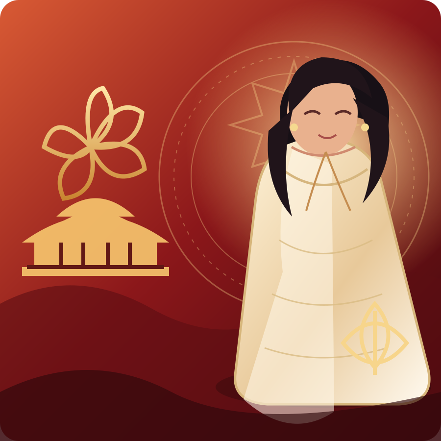

📜
Gìn giữ cội nguồn
Bảo tồn tiếng nói, phong tục, tri thức dân gian, di sản và những câu chuyện làm nên lịch sử dân tộc.
Văn hóa không chỉ nằm trong những trang sử hay di sản nghìn năm. Văn hóa sống trong cách ta mặc, ăn, nói, ứng xử và tự hào về nơi mình thuộc về.

Bản sắc văn hóa là những giá trị vật chất và tinh thần đặc trưng được hình thành, gìn giữ và trao truyền qua nhiều thế hệ. Đó là điều làm nên nét riêng của cộng đồng dân tộc Việt Nam.
Bảo tồn tiếng nói, phong tục, tri thức dân gian, di sản và những câu chuyện làm nên lịch sử dân tộc.
Văn hóa tạo sự gắn kết, nuôi dưỡng lòng tự hào và giúp thế hệ hôm nay hiểu hơn về thế hệ đi trước.
Hiểu mình là ai giúp người Việt tiếp nhận tinh hoa thế giới mà không đánh mất bản sắc riêng.
Bản sắc không chỉ là điều để ngắm nhìn. Đó là di sản đang hiện diện trong đời sống mỗi ngày.
Từ tà áo dài đến sắc màu trang phục các dân tộc.
Hương vị quê nhà, sự hài hòa và tinh tế.
Những dấu tích lịch sử và kho tàng tri thức.
Nhịp sống cộng đồng và nghệ thuật truyền thống.
Nhìn lại những dấu mốc được nhắc đến trong hành trình xây dựng và phát triển nền văn hóa Việt Nam.
Đặt nền tảng cho nhận thức và đường lối xây dựng nền văn hóa mới.
Chủ tịch Hồ Chí Minh nhấn mạnh: “Văn hóa soi đường cho quốc dân đi”.
Hội nghị triển khai thực hiện Nghị quyết Đại hội XIII về lĩnh vực văn hóa.
Dịp để mỗi người cùng tìm hiểu, trân trọng và lan tỏa giá trị văn hóa dân tộc.
Giữ gìn văn hóa không có nghĩa là khép mình trong quá khứ. Đó là biết trân trọng cội nguồn và làm cho những giá trị tốt đẹp tiếp tục sống trong hiện tại.
Đọc, xem, trải nghiệm di tích, bảo tàng, nghệ thuật và câu chuyện văn hóa địa phương.
Giữ gìn tiếng Việt, ứng xử văn minh, tôn trọng phong tục và sự đa dạng văn hóa.
Đưa chất liệu văn hóa vào học tập, thiết kế, âm nhạc, công nghệ và sản phẩm mới.
Chia sẻ thông tin đúng, kể câu chuyện di sản và giới thiệu vẻ đẹp Việt Nam với bạn bè.
Trả lời một câu hỏi nhỏ để xem bạn đã nắm được thông điệp của trang web chưa nhé!